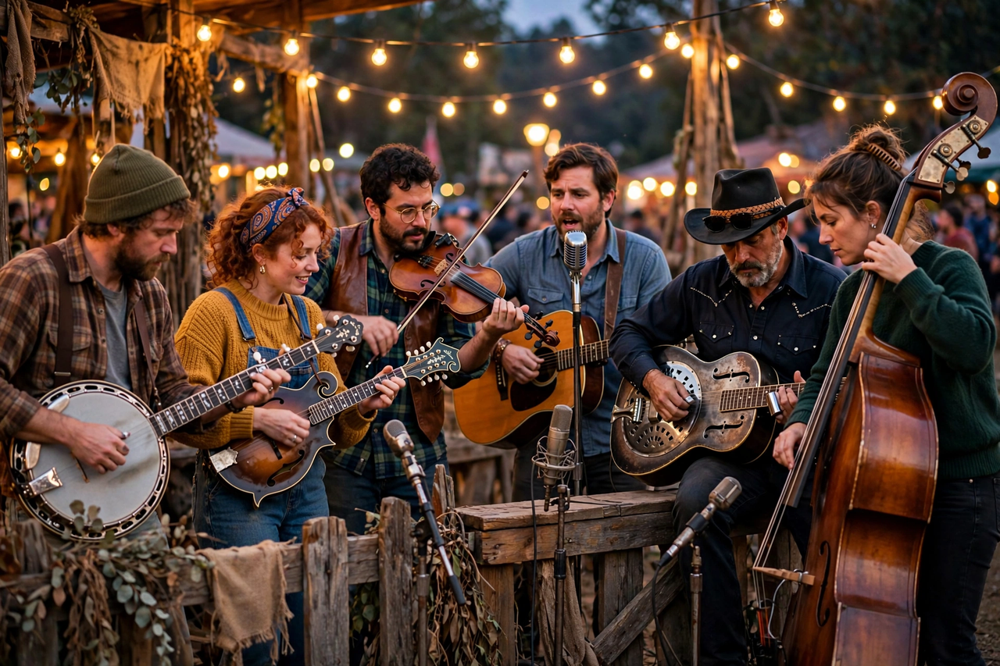

From Wikipedia, the free encyclopedia

| Bluegrass | |
|---|---|
| Stylistic origins | Country, old-time, Appalachian folk, blues, jazz |
| Cultural origins | 1940s, Appalachian region, United States |
| Typical instruments | Banjo, mandolin, fiddle, guitar, Dobro, upright bass |
| Key figure | Bill Monroe |
Bluegrass music is a genre of American roots music that developed in the 1940s in the Appalachian region of the United States. The genre derives its name from the band of its founding figure, Bill Monroe: Bill Monroe and His Blue Grass Boys, named in turn for Monroe's home state of Kentucky, the "Bluegrass State". Bluegrass blends elements of old-time music, country, blues and jazz, performed on acoustic stringed instruments at often fast tempos with virtuosic soloing.
A classic bluegrass band consists of banjo, mandolin, fiddle, acoustic guitar, Dobro (resonator guitar) and upright bass, with close harmony singing. Earl Scruggs revolutionised the banjo with his three-finger picking style after joining Monroe's band in 1945, and Monroe's high, tenor harmony singing gave the music its signature "high lonesome sound". Unlike mainstream country, traditional bluegrass uses no drums or electric instruments. Songs commonly take up themes of rural life, home, love, railroads and faith, and instrumental "breakdowns" showcase each player's improvisation in turn.
After Scruggs and guitarist Lester Flatt left Monroe in 1948 to form Flatt and Scruggs and the Foggy Mountain Boys, they carried bluegrass to wide audiences; their "Foggy Mountain Breakdown" later featured in the 1967 film Bonnie and Clyde. The Stanley Brothers, Reno and Smiley and others defined the first generation. A folk-revival audience adopted bluegrass in the 1960s, festivals spread, and younger musicians such as those in the New Grass Revival developed progressive bluegrass and newgrass, incorporating rock and jazz influences. The 2000 film O Brother, Where Art Thou? sparked a major mainstream revival. Artists such as Alison Krauss, Béla Fleck and Billy Strings have continued to expand the genre's audience.